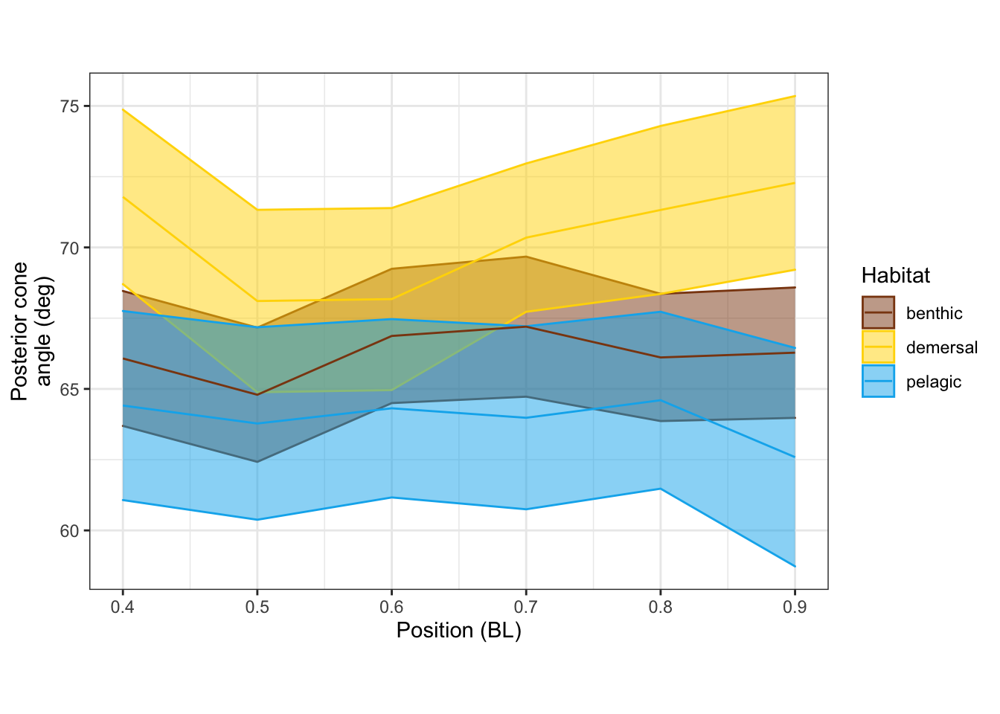
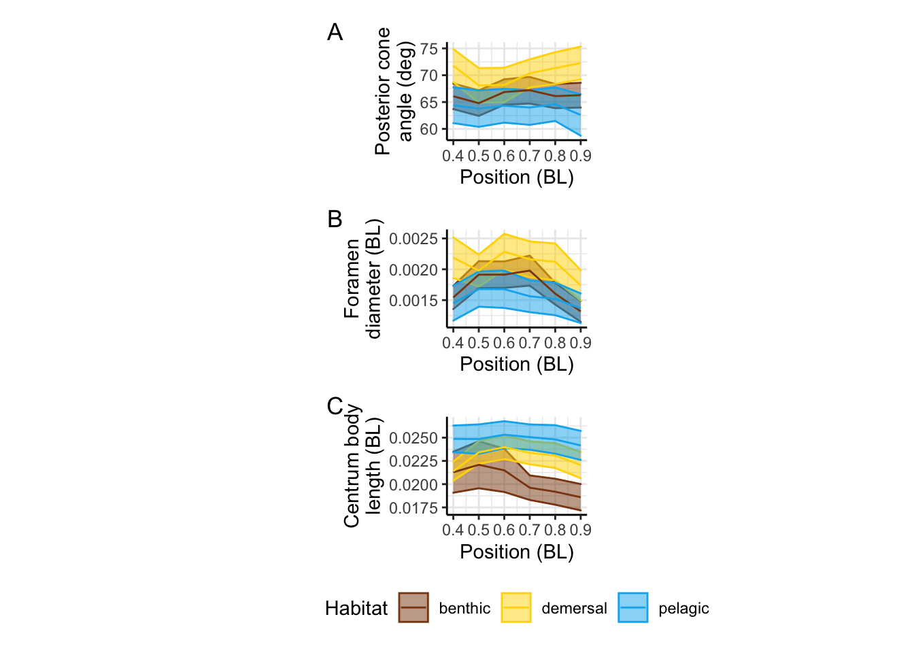

R Notebook
Last updated: 2022-04-11
Checks: 7 0
Knit directory: Code/
This reproducible R Markdown analysis was created with workflowr (version 1.7.0). The Checks tab describes the reproducibility checks that were applied when the results were created. The Past versions tab lists the development history.
Great! Since the R Markdown file has been committed to the Git repository, you know the exact version of the code that produced these results.
Great job! The global environment was empty. Objects defined in the global environment can affect the analysis in your R Markdown file in unknown ways. For reproduciblity it’s best to always run the code in an empty environment.
The command set.seed(20211230) was run prior to running the code in the R Markdown file. Setting a seed ensures that any results that rely on randomness, e.g. subsampling or permutations, are reproducible.
Great job! Recording the operating system, R version, and package versions is critical for reproducibility.
Nice! There were no cached chunks for this analysis, so you can be confident that you successfully produced the results during this run.
Great job! Using relative paths to the files within your workflowr project makes it easier to run your code on other machines.
Great! You are using Git for version control. Tracking code development and connecting the code version to the results is critical for reproducibility.
The results in this page were generated with repository version e47dde2. See the Past versions tab to see a history of the changes made to the R Markdown and HTML files.
Note that you need to be careful to ensure that all relevant files for the analysis have been committed to Git prior to generating the results (you can use wflow_publish or wflow_git_commit). workflowr only checks the R Markdown file, but you know if there are other scripts or data files that it depends on. Below is the status of the Git repository when the results were generated:
Ignored files:
Ignored: .DS_Store
Ignored: .Rhistory
Ignored: .Rproj.user/
Ignored: Flexibility Comparisons.nb.html
Ignored: Main.nb.html
Ignored: PGLS.FullData.nb.html
Ignored: PGLSforeachMeasFeature.nb.html
Ignored: PGLSwithPCA_Dims.nb.html
Ignored: PreppedVertMeas.nb.html
Ignored: ProcessCymatogasterFiles.nb.html
Ignored: ProcessFCSVfiles.nb.html
Ignored: TestingHabitatwithFriedmanData.nb.html
Ignored: Trilok_tree.nb.html
Ignored: VertLM.nb.html
Ignored: VertMeasLDA_Attempt.nb.html
Ignored: VertPGLS.nb.html
Ignored: VertPairs.nb.html
Ignored: analysis/.DS_Store
Ignored: analysis/10-VertLM.nb.html
Ignored: analysis/20-plot_phylogeny.nb.html
Ignored: analysis/21-plot_fits_and_summary.nb.html
Ignored: analysis/CheckSpeciesMatch.nb.html
Ignored: caper_test.nb.html
Ignored: data/.DS_Store
Ignored: ggtree_attempt.nb.html
Ignored: plot_example_data.nb.html
Ignored: plot_fits_and_summary.nb.html
Ignored: plot_phylogeny.nb.html
Ignored: renv/library/
Ignored: renv/staging/
Ignored: summarize_vert_meas.nb.html
Ignored: test_phylogeny.nb.html
Ignored: test_vertebraspace.nb.html
Ignored: vert_evol.Rproj
Untracked files:
Untracked: Main.html
Untracked: ProcessFCSVfiles.Rmd
Untracked: VertPGLS.html
Untracked: gg_saver.R
Untracked: output/BodyDistribution.pdf
Untracked: output/MasterVert_Measurements.csv
Untracked: output/mean_d_alphaPos_CBL.pdf
Untracked: output/pair_plot.pdf
Untracked: output/plot_example_data_figure.pdf
Untracked: output/stats_table.rtf
Untracked: plot_fits_and_summary.Rmd
Untracked: summarize_vert_meas.html
Untracked: testtree.csv
Untracked: vert_tree.csv
Note that any generated files, e.g. HTML, png, CSS, etc., are not included in this status report because it is ok for generated content to have uncommitted changes.
These are the previous versions of the repository in which changes were made to the R Markdown (analysis/21-plot_fits_and_summary.Rmd) and HTML (docs/21-plot_fits_and_summary.html) files. If you’ve configured a remote Git repository (see ?wflow_git_remote), click on the hyperlinks in the table below to view the files as they were in that past version.
| File | Version | Author | Date | Message |
|---|---|---|---|---|
| Rmd | 23908bd | Eric Tytell | 2021-12-30 | Test site build again |
| Rmd | edeae3c | Eric Tytell | 2021-12-30 | Rename notebooks to indicate order |
library(tidyverse)── Attaching packages ─────────────────────────────────────── tidyverse 1.3.1 ──✓ ggplot2 3.3.5 ✓ purrr 0.3.4
✓ tibble 3.1.4 ✓ dplyr 1.0.7
✓ tidyr 1.1.3 ✓ stringr 1.4.0
✓ readr 2.0.1 ✓ forcats 0.5.1── Conflicts ────────────────────────────────────────── tidyverse_conflicts() ──
x dplyr::filter() masks stats::filter()
x dplyr::lag() masks stats::lag()library(ggbeeswarm)
library(patchwork)
library(emmeans)
library(gt)
library(here)here() starts at /Users/etytel01/Documents/Vertebrae/Codevertdata <- read_csv(here("output/vertdata_summary_lm_species.csv"))Rows: 77 Columns: 99── Column specification ────────────────────────────────────────────────────────
Delimiter: ","
chr (7): Species, Habitat, Water_Type, MatchSpecies, MatchGenus, FullName, ...
dbl (92): fineness, CBL_med, CBL_max, CBL_mn, d_med, d_max, d_mn, alphaAnt_m...
ℹ Use `spec()` to retrieve the full column specification for this data.
ℹ Specify the column types or set `show_col_types = FALSE` to quiet this message.PGLSmodels <- readRDS(here('output/PGLSmodels.Rds'))
vertdata_all <- read_csv(here("output/vertdata_centered.csv"))Rows: 571 Columns: 71── Column specification ────────────────────────────────────────────────────────
Delimiter: ","
chr (17): Species, MatchGenus, MatchSpecies, Family, BodyShape, Habitat_Init...
dbl (54): Indiv, Pos, SL, CBL_old_raw, alpha_Pos_raw, d_raw, D_Pos_raw, alph...
ℹ Use `spec()` to retrieve the full column specification for this data.
ℹ Specify the column types or set `show_col_types = FALSE` to quiet this message.modeltests <- read_csv(here("output/modeltests.csv"))Rows: 19 Columns: 19── Column specification ────────────────────────────────────────────────────────
Delimiter: ","
chr (2): var, term
dbl (16): p.value, total_eff, benthic_demersal_p, benthic_pelagic_p, demersa...
lgl (1): model
ℹ Use `spec()` to retrieve the full column specification for this data.
ℹ Specify the column types or set `show_col_types = FALSE` to quiet this message.overallmeans <-
vertdata %>%
group_by(Habitat) %>%
dplyr::summarize(across(c(alphaPos_mn, alphaAnt_mn, CBL_mn, d_mn, DAnt_mn, DPos_mn,
alphaPos_80, alphaAnt_80, CBL_80, d_80, DAnt_80, DPos_80,
alphaPos_vtx, alphaAnt_vtx, CBL_vtx, d_vtx, DAnt_vtx, DPos_vtx,
alphaPos_quad, alphaAnt_quad, CBL_quad, d_quad, DAnt_quad, DPos_quad),
list(mn = mean, se = ~ sd(.x) / sqrt(length(.x)))))
overallmeans# A tibble: 3 × 49
Habitat alphaPos_mn_mn alphaPos_mn_se alphaAnt_mn_mn alphaAnt_mn_se CBL_mn_mn
<chr> <dbl> <dbl> <dbl> <dbl> <dbl>
1 benthic 67.5 2.39 71.5 2.54 0.0219
2 demersal 70.6 2.87 74.9 2.70 0.0229
3 pelagic 63.9 3.03 66.8 2.95 0.0249
# … with 43 more variables: CBL_mn_se <dbl>, d_mn_mn <dbl>, d_mn_se <dbl>,
# DAnt_mn_mn <dbl>, DAnt_mn_se <dbl>, DPos_mn_mn <dbl>, DPos_mn_se <dbl>,
# alphaPos_80_mn <dbl>, alphaPos_80_se <dbl>, alphaAnt_80_mn <dbl>,
# alphaAnt_80_se <dbl>, CBL_80_mn <dbl>, CBL_80_se <dbl>, d_80_mn <dbl>,
# d_80_se <dbl>, DAnt_80_mn <dbl>, DAnt_80_se <dbl>, DPos_80_mn <dbl>,
# DPos_80_se <dbl>, alphaPos_vtx_mn <dbl>, alphaPos_vtx_se <dbl>,
# alphaAnt_vtx_mn <dbl>, alphaAnt_vtx_se <dbl>, CBL_vtx_mn <dbl>, …modelmeans <-
modeltests %>%
select(var, ends_with("mn"), ends_with("se")) %>%
pivot_longer(ends_with("mn") | ends_with("se"), names_to = "HabitatEff", values_to = "value") %>%
separate(HabitatEff, sep = "_", into = c("Habitat", "Eff")) %>%
unite(var, c(var, Eff)) %>%
pivot_wider(names_from = var, values_from = value)
modelmeans# A tibble: 3 × 39
Habitat alphaPos_mn_mn alphaPos_mn_se CBL_quad_mn CBL_quad_se d_mn_mn d_mn_se
<chr> <dbl> <dbl> <dbl> <dbl> <dbl> <dbl>
1 benthic 97.4 13.5 -0.0228 0.0386 0.00313 9.70e-4
2 demersal 88.7 13.3 -0.0288 0.0381 0.00303 9.58e-4
3 pelagic 84.0 13.7 0.00649 0.0392 0.00234 9.84e-4
# … with 32 more variables: d_vtx_mn <dbl>, d_vtx_se <dbl>, CBL_vtx_mn <dbl>,
# CBL_vtx_se <dbl>, alphaAnt_mn_mn <dbl>, alphaAnt_mn_se <dbl>,
# DAnt_quad_mn <dbl>, DAnt_quad_se <dbl>, alphaAnt_quad_mn <dbl>,
# alphaAnt_quad_se <dbl>, DPos_quad_mn <dbl>, DPos_quad_se <dbl>,
# fineness_mn <dbl>, fineness_se <dbl>, alphaPos_quad_mn <dbl>,
# alphaPos_quad_se <dbl>, DPos_mn_mn <dbl>, DPos_mn_se <dbl>,
# DAnt_mn_mn <dbl>, DAnt_mn_se <dbl>, alphaPos_vtx_mn <dbl>, …reversemeasurements <- function(df) {
df %>%
mutate(Pt1x = DPos / 2 / tan(alphaPos/2 * pi/180),
Pt2x = DPos / 2 / tan(alphaPos/2 * pi/180),
Pt3x = -DAnt / 2 / tan(alphaAnt/2 * pi/180),
Pt4x = -DAnt / 2 / tan(alphaAnt/2 * pi/180),
Pt5x = 0,
Pt6x = 0,
Pt7x = 0,
Pt8x = d/2 * tan(alphaPos/2 * pi/180),
Pt9x = d/2 * tan(alphaPos/2 * pi/180),
Pt10x = -d/2 * tan(alphaAnt/2 * pi/180),
Pt11x = -d/2 * tan(alphaAnt/2 * pi/180),
Pt1y = DPos / 2,
Pt2y = -DPos / 2,
Pt3y = DAnt / 2,
Pt4y = -DAnt / 2,
Pt5y = 0,
Pt6y = d / 2,
Pt7y = -d / 2,
Pt8y = d / 2,
Pt9y = -d / 2,
Pt10y = d / 2,
Pt11y = -d / 2)
}vertshape <-
modelmeans %>%
rename_with(~ str_replace(.x, "_mn_mn", "")) %>%
reversemeasurements()vertshape <-
vertshape %>%
mutate(Shape1x = Pt1x,
Shape2x = Pt2x,
Shape3x = Pt9x,
Shape4x = Pt11x,
Shape5x = Pt4x,
Shape6x = Pt3x,
Shape7x = Pt10x,
Shape8x = Pt8x,
Shape9x = Pt1x,
Shape1y = Pt1y,
Shape2y = Pt2y,
Shape3y = Pt9y,
Shape4y = Pt11y,
Shape5y = Pt4y,
Shape6y = Pt3y,
Shape7y = Pt10y,
Shape8y = Pt8y,
Shape9y = Pt1y)vertshape <-
vertshape %>%
select(!starts_with("Pt")) %>%
pivot_longer(starts_with("Shape"), names_to = "Pt", values_to = "value") %>%
extract(Pt, into = c("Num", "XY"), regex = "Shape(\\d+)(x|y)") %>%
pivot_wider(names_from = XY, values_from = value)vertshape_panel <-
vertshape %>%
ggplot(aes(x = x, y = y, color = Habitat, fill = Habitat)) +
geom_path() +
geom_polygon(alpha = 0.2) +
coord_fixed() +
scale_color_manual(values = c(benthic="chocolate4", demersal = "gold", pelagic = "deepskyblue2"),
guide = "none") +
scale_fill_manual(values = c(benthic="chocolate4", demersal = "gold", pelagic = "deepskyblue2"),
guide = "none") +
annotate("line", x = c(0.01, 0.01), y = c(-0.003, -0.007), color = "black") +
annotate("text", x = 0.01, y = -0.005, label = "0.004 BL", angle=90, size=4, vjust = 1.3) +
theme_minimal() +
theme(line = element_blank(),
text = element_blank(),
title = element_blank())
vertshape_panelmodeltests %>%
filter(str_detect(var, "alphaPos_mn") | str_detect(var, "d_mn")) %>%
arrange(var)# A tibble: 2 × 19
var p.value total_eff benthic_demersa… benthic_pelagic… demersal_pelagi…
<chr> <dbl> <dbl> <dbl> <dbl> <dbl>
1 alphaPos_mn 0.0000437 1.05 0.000899 0.00191 0.413
2 d_mn 0.0135 0.860 0.805 0.0132 0.0310
# … with 13 more variables: statistic <dbl>, term <chr>, df <dbl>, model <lgl>,
# benthic_demersal_eff <dbl>, benthic_pelagic_eff <dbl>,
# demersal_pelagic_eff <dbl>, benthic_mn <dbl>, demersal_mn <dbl>,
# pelagic_mn <dbl>, benthic_se <dbl>, demersal_se <dbl>, pelagic_se <dbl>dyl = 0.0005
yl = max(vertdata$d_mn) + dyl
d_mn_panel <- ggplot(vertdata, aes(x = Habitat, y = d_mn, color = Habitat, shape = Habitat)) +
geom_quasirandom(width=0.3, alpha = 0.5) +
geom_line(data = modelmeans, aes(x = Habitat, y = d_mn_mn, group = 1), color = "black") +
geom_pointrange(data = modelmeans,
aes(x = Habitat, y = d_mn_mn,
ymin = d_mn_mn - d_mn_se, ymax = d_mn_mn + d_mn_se), size = 0.8) +
annotate("line", x = c(2,3), y = c(yl, yl), color = "black") +
annotate("text", x = 2.5, y = yl, label = "* 0.37", size = 3, vjust = -0.2) +
annotate("line", x = c(1,3), y = c(yl + dyl, yl + dyl), color = "black") +
annotate("text", x = 2, y = yl+dyl, label = "* 0.43", size = 3, vjust = -0.2) +
labs(y = "Mean foramen\ndiameter (BL)") +
scale_x_discrete(labels = c("b", "d", "p")) +
scale_shape_manual(values = c(15, 19, 4)) +
scale_color_manual(values = c(benthic="chocolate4", demersal = "gold", pelagic = "deepskyblue2")) +
theme_bw() + theme(aspect.ratio = 0.7)
d_mn_paneldyl = 5
yl = max(vertdata$alphaPos_mn) + dyl
alphaPos_mn_panel <- ggplot(vertdata, aes(x = Habitat, y = alphaPos_mn, color = Habitat, shape = Habitat)) +
geom_quasirandom(width=0.3, alpha = 0.5) +
geom_line(data = modelmeans, aes(x = Habitat, y = alphaPos_mn_mn, group = 1), color = "black") +
geom_pointrange(data = modelmeans,
aes(x = Habitat, y = alphaPos_mn_mn,
ymin = alphaPos_mn_mn - alphaPos_mn_se, ymax = alphaPos_mn_mn + alphaPos_mn_se), size = 0.8) +
annotate("line", x = c(1,2), y = c(yl, yl), color = "black") +
annotate("text", x = 1.5, y = yl, label = "*** 0.34", size = 3, vjust = -0.2) +
annotate("line", x = c(1,3), y = c(yl + dyl, yl + dyl), color = "black") +
annotate("text", x = 2, y = yl+dyl, label = "** 0.52", size = 3, vjust = -0.2) +
labs(y = "Mean posterior\ncone angle (deg)") +
scale_x_discrete(labels = c("b", "d", "p")) +
scale_shape_manual(values = c(15, 19, 4)) +
scale_color_manual(values = c(benthic="chocolate4", demersal = "gold", pelagic = "deepskyblue2")) +
theme_bw() + theme(aspect.ratio = 0.7)
alphaPos_mn_panel
dyl = 0
yl = max(vertdata$CBL_mn) + dyl
CBL_mn_panel <- ggplot(vertdata, aes(x = Habitat, y = CBL_mn, color = Habitat, shape = Habitat)) +
geom_quasirandom(width=0.3, alpha = 0.5) +
geom_line(data = modelmeans, aes(x = Habitat, y = CBL_mn_mn, group = 1), color = "black") +
geom_pointrange(data = modelmeans,
aes(x = Habitat, y = CBL_mn_mn,
ymin = CBL_mn_mn - CBL_mn_se, ymax = CBL_mn_mn + CBL_mn_se), size = 0.8) +
#annotate("line", x = c(1,2), y = c(yl, yl), color = "black") +
#annotate("text", x = 1.5, y = yl, label = "*** 0.34", size = 3, vjust = -0.2) +
#annotate("line", x = c(1,3), y = c(yl + dyl, yl + dyl), color = "black") +
#annotate("text", x = 2, y = yl+dyl, label = "** 0.52", size = 3, vjust = -0.2) +
labs(y = "Centrum body\nlength (BL)") +
scale_x_discrete(labels = c("b", "d", "p")) +
scale_shape_manual(values = c(15, 19, 4)) +
scale_color_manual(values = c(benthic="chocolate4", demersal = "gold", pelagic = "deepskyblue2")) +
theme_bw() + theme(aspect.ratio = 0.7)
CBL_mn_panelalphaPos_mn_panel / d_mn_panel / CBL_mn_panel / vertshape_panel +
plot_annotation(tag_levels = 'A') +
plot_layout(guides = 'collect') &
theme(legend.position = "bottom",
panel.border = element_blank(), axis.line = element_line())ggsave(here('output/mean_d_alphaPos_CBL.pdf'), width = 3, units = "in")Saving 3 x 5 in imageDistribution along the body
Posterior cone angle
alphaPosvPosPanel <-
vertdata_all %>%
filter(Pos >= 0.4) %>%
ggplot(aes(x = Pos, y = alphaPos, color=Habitat, fill=Habitat, group=Habitat)) +
stat_summary(fun.data = "mean_se", geom="ribbon", alpha=0.5) +
stat_summary(fun = "mean", geom="line") +
scale_shape_manual(values = c(15, 19, 4)) +
scale_color_manual(values = c(benthic="chocolate4", demersal = "gold", pelagic = "deepskyblue2")) +
scale_fill_manual(values = c(benthic="chocolate4", demersal = "gold", pelagic = "deepskyblue2")) +
labs(x = "Position (BL)", y = "Posterior cone\nangle (deg)") +
theme_bw() + theme(aspect.ratio = 0.7)
alphaPosvPosPanel
Centrum body length
modeltests %>%
filter(str_detect(var, "CBL")) %>%
arrange(var)# A tibble: 3 × 19
var p.value total_eff benthic_demersal… benthic_pelagic… demersal_pelagi…
<chr> <dbl> <dbl> <dbl> <dbl> <dbl>
1 CBL_mn 0.316 0.281 0.327 0.610 0.997
2 CBL_quad 0.00385 0.963 0.635 0.0231 0.00378
3 CBL_vtx 0.0404 0.730 0.670 0.133 0.0359
# … with 13 more variables: statistic <dbl>, term <chr>, df <dbl>, model <lgl>,
# benthic_demersal_eff <dbl>, benthic_pelagic_eff <dbl>,
# demersal_pelagic_eff <dbl>, benthic_mn <dbl>, demersal_mn <dbl>,
# pelagic_mn <dbl>, benthic_se <dbl>, demersal_se <dbl>, pelagic_se <dbl>CBLvPosPanel <-
vertdata_all %>%
filter(Pos >= 0.4) %>%
ggplot(aes(x = Pos, y = CBL, color=Habitat, fill=Habitat, group=Habitat)) +
stat_summary(fun.data = "mean_se", geom="ribbon", alpha=0.5) +
stat_summary(fun = "mean", geom="line") +
scale_shape_manual(values = c(15, 19, 4)) +
scale_color_manual(values = c(benthic="chocolate4", demersal = "gold", pelagic = "deepskyblue2")) +
scale_fill_manual(values = c(benthic="chocolate4", demersal = "gold", pelagic = "deepskyblue2")) +
labs(x = "Position (BL)", y = "Centrum body\nlength (BL)") +
theme_bw() + theme(aspect.ratio = 0.7)
CBLvPosPaneldyl = 1
yl = max(vertdata$CBL_vtx) + dyl
CBLvtxPanel <- ggplot(vertdata, aes(x = Habitat, y = CBL_vtx, color = Habitat, shape = Habitat)) +
geom_quasirandom(width=0.3, alpha = 0.5) +
geom_line(data = modelmeans, aes(x = Habitat, y = CBL_vtx_mn, group = 1), color = "black") +
geom_pointrange(data = modelmeans,
aes(x = Habitat, y = CBL_vtx_mn,
ymin = CBL_vtx_mn - CBL_vtx_se, ymax = CBL_vtx_mn + CBL_vtx_se), size = 0.8) +
#annotate("line", x = c(1,2), y = c(yl, yl), color = "black") +
#annotate("text", x = 1.5, y = yl, label = "*** 0.34", size = 3, vjust = -0.2) +
annotate("line", x = c(2,3), y = c(yl + dyl, yl + dyl), color = "black") +
annotate("text", x = 2.5, y = yl+dyl, label = "* 0.36", size = 3, vjust = -0.2) +
labs(y = "Fit location of\nlongest vertebra (BL)") +
scale_x_discrete(labels = c("b", "d", "p")) +
scale_shape_manual(values = c(15, 19, 4)) +
scale_color_manual(values = c(benthic="chocolate4", demersal = "gold", pelagic = "deepskyblue2")) +
theme_bw() # + theme(aspect.ratio = 0.7)
CBLvtxPaneldyl = 0.01
yl = max(vertdata$CBL_quad) + dyl
CBLquadPanel <- ggplot(vertdata, aes(x = Habitat, y = CBL_quad, color = Habitat, shape = Habitat)) +
geom_quasirandom(width=0.3, alpha = 0.5) +
geom_line(data = modelmeans, aes(x = Habitat, y = CBL_quad_mn, group = 1), color = "black") +
geom_pointrange(data = modelmeans,
aes(x = Habitat, y = CBL_quad_mn,
ymin = CBL_quad_mn - CBL_quad_se, ymax = CBL_quad_mn + CBL_quad_se), size = 0.8) +
annotate("line", x = c(2,3), y = c(yl, yl), color = "black") +
annotate("text", x = 2.5, y = yl, label = "** -0.48", size = 3, vjust = -0.2) +
annotate("line", x = c(1,3), y = c(yl + dyl, yl + dyl), color = "black") +
annotate("text", x = 2, y = yl+dyl, label = "* -0.40", size = 3, vjust = -0.2) +
labs(y = "Centrum body length\nquad. coeff. (BL^2)") +
scale_x_discrete(labels = c("b", "d", "p")) +
scale_shape_manual(values = c(15, 19, 4)) +
scale_color_manual(values = c(benthic="chocolate4", demersal = "gold", pelagic = "deepskyblue2")) +
theme_bw() # + theme(aspect.ratio = 0.7)
CBLquadPanelForamen diameter
dvPosPanel <-
vertdata_all %>%
filter(Pos >= 0.4) %>%
ggplot(aes(x = Pos, y = d, color=Habitat, fill=Habitat, group=Habitat)) +
stat_summary(fun.data = "mean_se", geom="ribbon", alpha=0.5) +
stat_summary(fun = "mean", geom="line") +
scale_shape_manual(values = c(15, 19, 4)) +
scale_color_manual(values = c(benthic="chocolate4", demersal = "gold", pelagic = "deepskyblue2")) +
scale_fill_manual(values = c(benthic="chocolate4", demersal = "gold", pelagic = "deepskyblue2")) +
labs(x = "Position (BL)", y = "Foramen\ndiameter (BL)") +
theme_bw() + theme(aspect.ratio = 0.7)
dvPosPanelmodeltests %>%
filter(str_detect(var, "d_")) %>%
arrange(var)# A tibble: 3 × 19
var p.value total_eff benthic_demersal… benthic_pelagic… demersal_pelagi…
<chr> <dbl> <dbl> <dbl> <dbl> <dbl>
1 d_mn 0.0135 0.860 0.805 0.0132 0.0310
2 d_quad 0.436 0.220 0.446 1.00 0.745
3 d_vtx 0.0000251 0.799 0.0000937 0.0239 1.00
# … with 13 more variables: statistic <dbl>, term <chr>, df <dbl>, model <lgl>,
# benthic_demersal_eff <dbl>, benthic_pelagic_eff <dbl>,
# demersal_pelagic_eff <dbl>, benthic_mn <dbl>, demersal_mn <dbl>,
# pelagic_mn <dbl>, benthic_se <dbl>, demersal_se <dbl>, pelagic_se <dbl>dyl = 1
yl = max(vertdata$d_vtx) + dyl
dvtxPanel <- ggplot(vertdata, aes(x = Habitat, y = d_vtx, color = Habitat, shape = Habitat)) +
geom_quasirandom(width=0.3, alpha = 0.5) +
geom_line(data = modelmeans, aes(x = Habitat, y = d_vtx_mn, group = 1), color = "black") +
geom_pointrange(data = modelmeans,
aes(x = Habitat, y = d_vtx_mn,
ymin = d_vtx_mn - d_vtx_se, ymax = d_vtx_mn + d_vtx_se), size = 0.8) +
annotate("line", x = c(1,2), y = c(yl, yl), color = "black") +
annotate("text", x = 1.5, y = yl, label = "*** -0.40", size = 3, vjust = -0.2) +
annotate("line", x = c(1,3), y = c(yl + dyl, yl + dyl), color = "black") +
annotate("text", x = 2, y = yl+dyl, label = "* -0.40", size = 3, vjust = -0.2) +
labs(y = "Fit location of\nlargest foramen (BL)") +
scale_x_discrete(labels = c("b", "d", "p")) +
scale_shape_manual(values = c(15, 19, 4)) +
scale_color_manual(values = c(benthic="chocolate4", demersal = "gold", pelagic = "deepskyblue2")) +
theme_bw() # + theme(aspect.ratio = 0.7)
dvtxPaneldyl = 0.01
yl = max(vertdata$d_quad) + dyl
dQuadPanel <- ggplot(vertdata, aes(x = Habitat, y = d_quad, color = Habitat, shape = Habitat)) +
geom_quasirandom(width=0.3, alpha = 0.5) +
geom_line(data = modelmeans, aes(x = Habitat, y = d_quad_mn, group = 1), color = "black") +
geom_pointrange(data = modelmeans,
aes(x = Habitat, y = d_quad_mn,
ymin = d_quad_mn - d_quad_se, ymax = d_quad_mn + d_quad_se), size = 0.8) +
#annotate("line", x = c(2,3), y = c(yl, yl), color = "black") +
#annotate("text", x = 2.5, y = yl, label = "** -0.48", size = 3, vjust = -0.2) +
#annotate("line", x = c(1,3), y = c(yl + dyl, yl + dyl), color = "black") +
#annotate("text", x = 2, y = yl+dyl, label = "* -0.40", size = 3, vjust = -0.2) +
labs(y = "Foramen diameter\nquad. coeff. (BL^2)") +
scale_x_discrete(labels = c("b", "d", "p")) +
scale_shape_manual(values = c(15, 19, 4)) +
scale_color_manual(values = c(benthic="chocolate4", demersal = "gold", pelagic = "deepskyblue2")) +
theme_bw() # + theme(aspect.ratio = 0.7)
dQuadPanel
Combined figure
alphaPosvPosPanel / dvPosPanel / CBLvPosPanel + plot_annotation(tag_levels = 'A') +
plot_layout(guides = 'collect') &
theme(legend.position = "bottom",
panel.border = element_blank(), axis.line = element_line())
ggsave(here('output/BodyDistribution.pdf'), width = 3, units = "in")Saving 3 x 5 in imagePGLSmodels# A tibble: 19 × 19
var p.value total_eff benthic_demersa… benthic_pelagic… demersal_pelagi…
<chr> <dbl> <dbl> <dbl> <dbl> <dbl>
1 alphaPos_mn 0.0000437 1.05 0.000899 0.00191 0.413
2 CBL_quad 0.00385 0.963 0.635 0.0231 0.00378
3 d_mn 0.0135 0.860 0.805 0.0132 0.0310
4 d_vtx 0.0000251 0.799 0.0000937 0.0239 1.00
5 CBL_vtx 0.0404 0.730 0.670 0.133 0.0359
6 alphaAnt_mn 0.0948 0.626 0.884 0.168 0.0836
7 DAnt_quad 0.208 0.524 0.855 0.186 0.306
8 alphaAnt_quad 0.167 0.521 0.556 0.499 0.175
9 DPos_quad 0.271 0.472 0.947 0.253 0.326
10 fineness 0.279 0.456 0.788 0.492 0.260
11 alphaPos_quad 0.216 0.448 0.452 0.718 0.274
12 DPos_mn 0.340 0.410 0.735 0.623 0.336
13 DAnt_mn 0.413 0.384 0.918 0.544 0.384
14 alphaPos_vtx 0.495 0.327 0.713 0.514 0.798
15 CBL_mn 0.316 0.281 0.327 0.610 0.997
16 DPos_vtx 0.516 0.237 0.549 0.703 0.985
17 d_quad 0.436 0.220 0.446 1.00 0.745
18 alphaAnt_vtx 0.691 0.178 0.738 0.988 0.812
19 DAnt_vtx 0.923 0.115 0.987 0.954 0.917
# … with 13 more variables: statistic <dbl>, term <chr>, df <dbl>,
# model <list>, benthic_demersal_eff <dbl>, benthic_pelagic_eff <dbl>,
# demersal_pelagic_eff <dbl>, benthic_mn <dbl>, demersal_mn <dbl>,
# pelagic_mn <dbl>, benthic_se <dbl>, demersal_se <dbl>, pelagic_se <dbl>tab <-
PGLSmodels %>%
select(var, statistic, p.value, ends_with("eff"), -total_eff) %>%
separate(var, into = c("var", "posstat")) %>%
mutate(posstat = if_else(var == "fineness", "mn", posstat)) %>%
# group_by(var) %>%
# group_modify(~ add_row(.x,.before=0)) %>%
# mutate(posstat = if_else(is.na(posstat), "x", posstat)) %>%
mutate(posstat = factor(posstat, levels = c("x", "mn", "vtx", "quad")),
posstat = fct_recode(posstat, x = "x", mean = "mn", vertex = "vtx", "quad. coef." = "quad")) %>%
ungroup() %>%
mutate(var = case_when(
var == "alphaAnt" ~ "Anterior cone angle",
var == "alphaPos" ~ "Posterior cone angle",
var == "CBL" ~ "Centrum body length",
var == "DAnt" ~ "Anterior cone diameter",
var == "DPos" ~ "Posterior cone diameter",
var == "d" ~ "Foramen diameter",
var == "fineness" ~ "Fineness"
)) %>%
arrange(var, posstat) %>%
gt(
groupname_col = "var",
rowname_col = "posstat"
) %>%
fmt_number(
columns = "statistic",
suffixing = FALSE,
n_sigfig = 2
) %>%
fmt_number(
columns = "p.value",
decimals = 3
) %>%
fmt_number(
columns = c("benthic_demersal_eff", "benthic_pelagic_eff", "demersal_pelagic_eff"),
decimals = 2,
force_sign = TRUE
) %>%
tab_style(
style = cell_text(weight = "bold"),
locations = cells_body(rows = p.value < 0.05)
) %>%
cols_label(
var = md("Measurement"),
posstat = "",
statistic = md("F2,74"),
p.value = md("p"),
benthic_demersal_eff = md("b - d"),
benthic_pelagic_eff = md("b - p"),
demersal_pelagic_eff = md("d - p")
) %>%
tab_style(
locations = cells_column_labels(columns = c("var", "posstat", "statistic", "p.value")),
style = cell_text(v_align = "middle",
align = "center")
) %>%
tab_stubhead("Measurement") %>%
tab_style(
locations = cells_stubhead(),
style = cell_text(v_align = "middle")
) %>%
tab_spanner(
label = "Effect sizes",
columns = c("benthic_demersal_eff", "benthic_pelagic_eff", "demersal_pelagic_eff")
) %>%
fmt_missing(columns = 1:7,
missing_text = "")Warning: Expected 2 pieces. Missing pieces filled with `NA` in 1 rows [10].tab| Measurement | F2,74 | p | Effect sizes | ||
|---|---|---|---|---|---|
| b - d | b - p | d - p | |||
| Anterior cone angle | |||||
| mean | 4.7 | 0.095 | −0.04 | +0.27 | +0.31 |
| vertex | 0.74 | 0.691 | −0.07 | +0.02 | +0.09 |
| quad. coef. | 3.6 | 0.167 | −0.09 | +0.17 | +0.26 |
| Anterior cone diameter | |||||
| mean | 1.8 | 0.413 | −0.04 | +0.16 | +0.19 |
| vertex | 0.16 | 0.923 | +0.01 | −0.04 | −0.06 |
| quad. coef. | 3.1 | 0.208 | −0.05 | −0.26 | −0.21 |
| Centrum body length | |||||
| mean | 2.3 | 0.316 | −0.13 | −0.14 | −0.01 |
| vertex | 6.4 | 0.040 | −0.08 | +0.29 | +0.36 |
| quad. coef. | 11 | 0.004 | +0.08 | −0.40 | −0.48 |
| Fineness | |||||
| mean | 2.6 | 0.279 | +0.06 | −0.17 | −0.23 |
| Foramen diameter | |||||
| mean | 8.6 | 0.014 | +0.06 | +0.43 | +0.37 |
| vertex | 21 | 0.000 | −0.40 | −0.40 | +0.00 |
| quad. coef. | 1.7 | 0.436 | +0.11 | +0.00 | −0.11 |
| Posterior cone angle | |||||
| mean | 20 | 0.000 | +0.34 | +0.53 | +0.18 |
| vertex | 1.4 | 0.495 | +0.07 | +0.16 | +0.09 |
| quad. coef. | 3.1 | 0.216 | −0.11 | +0.12 | +0.22 |
| Posterior cone diameter | |||||
| mean | 2.2 | 0.340 | −0.07 | +0.14 | +0.21 |
| vertex | 1.3 | 0.516 | +0.09 | +0.12 | +0.02 |
| quad. coef. | 2.6 | 0.271 | −0.03 | −0.24 | −0.21 |
gtsave(tab, here("output/stats_table.rtf"))
sessionInfo()R version 4.1.2 (2021-11-01)
Platform: x86_64-apple-darwin17.0 (64-bit)
Running under: macOS Big Sur 10.16
Matrix products: default
BLAS: /Library/Frameworks/R.framework/Versions/4.1/Resources/lib/libRblas.0.dylib
LAPACK: /Library/Frameworks/R.framework/Versions/4.1/Resources/lib/libRlapack.dylib
locale:
[1] en_US.UTF-8/en_US.UTF-8/en_US.UTF-8/C/en_US.UTF-8/en_US.UTF-8
attached base packages:
[1] stats graphics grDevices datasets utils methods base
other attached packages:
[1] here_1.0.1 gt_0.3.1 emmeans_1.6.3 patchwork_1.1.1
[5] ggbeeswarm_0.6.0 forcats_0.5.1 stringr_1.4.0 dplyr_1.0.7
[9] purrr_0.3.4 readr_2.0.1 tidyr_1.1.3 tibble_3.1.4
[13] ggplot2_3.3.5 tidyverse_1.3.1
loaded via a namespace (and not attached):
[1] fs_1.5.0 lubridate_1.7.10 bit64_4.0.5 httr_1.4.2
[5] rprojroot_2.0.2 tools_4.1.2 backports_1.2.1 utf8_1.2.2
[9] R6_2.5.1 vipor_0.4.5 DBI_1.1.1 colorspace_2.0-2
[13] withr_2.4.2 tidyselect_1.1.1 bit_4.0.4 compiler_4.1.2
[17] git2r_0.29.0 cli_3.0.1 rvest_1.0.1 xml2_1.3.2
[21] sass_0.4.0 labeling_0.4.2 scales_1.1.1 checkmate_2.0.0
[25] mvtnorm_1.1-2 commonmark_1.7 digest_0.6.27 rmarkdown_2.10
[29] pkgconfig_2.0.3 htmltools_0.5.2 dbplyr_2.1.1 fastmap_1.1.0
[33] highr_0.9 rlang_0.4.11 readxl_1.3.1 rstudioapi_0.13
[37] generics_0.1.0 farver_2.1.0 jsonlite_1.7.2 vroom_1.5.4
[41] magrittr_2.0.1 Rcpp_1.0.7 munsell_0.5.0 fansi_0.5.0
[45] lifecycle_1.0.0 stringi_1.7.4 whisker_0.4 yaml_2.2.1
[49] grid_4.1.2 parallel_4.1.2 promises_1.2.0.1 crayon_1.4.1
[53] lattice_0.20-45 haven_2.4.3 hms_1.1.0 knitr_1.34
[57] pillar_1.6.2 estimability_1.3 reprex_2.0.1 glue_1.4.2
[61] evaluate_0.14 renv_0.14.0 modelr_0.1.8 vctrs_0.3.8
[65] tzdb_0.1.2 httpuv_1.6.4 cellranger_1.1.0 gtable_0.3.0
[69] assertthat_0.2.1 xfun_0.25 xtable_1.8-4 broom_0.7.9
[73] coda_0.19-4 later_1.3.0 beeswarm_0.4.0 workflowr_1.7.0
[77] ellipsis_0.3.2